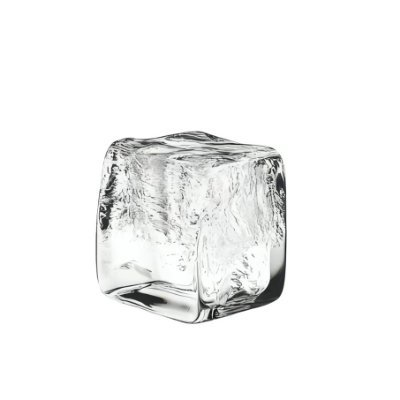

三崎南枝
@misakinae8964
@seehorn360779 我只是觉得他颜值身材都达标，可以驾驭住那个角色的风格，至于他以前是做什么的我不在乎，难道杀人犯就不能cos我喜欢的角色了嘛

拉不拉
@seehorn360779
@misakinae8964 呃不是，我其实没懂你为啥说他配？他不是卖的吗？你喜欢一个角色，你也不喜欢让鸡去 cos 你的角色吧。你不想你的角色被鸡 cos 吧？